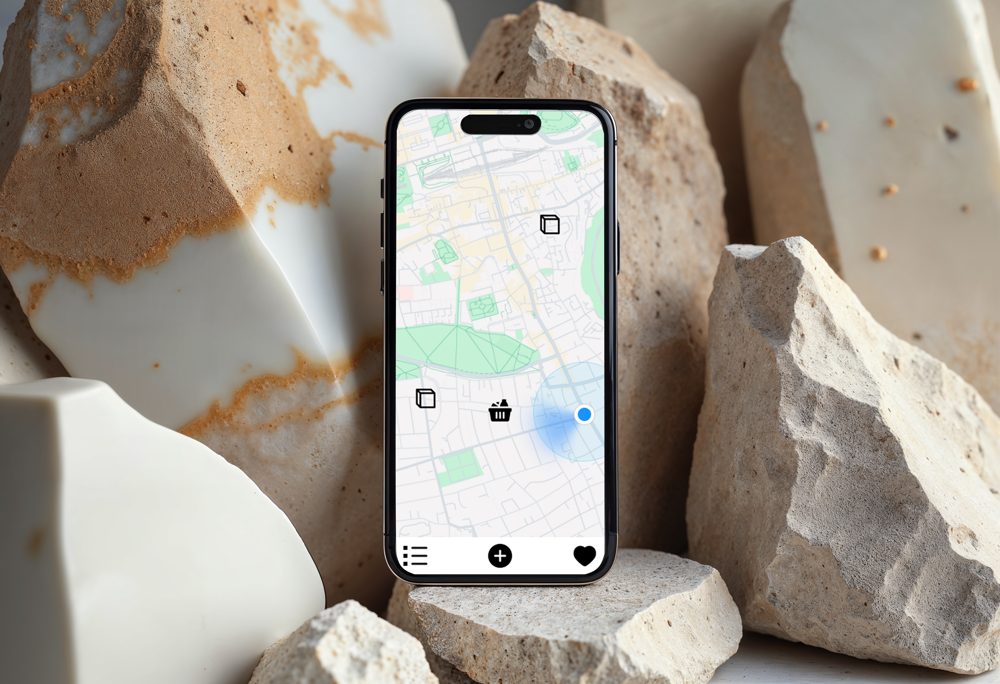

Featured Project
By the Bin: Map-based sharing for sustainable living

Context
An ongoing personal project that helps people share and discover preloved items left on the street for collection, reducing waste while building local connections.
Brief
Design and develop a geolocation-based mobile app that makes it easy for users to share and discover free resources locally. The solution needed to be intuitive, accessible and address real-world challenges.
Outcome
I conducted user research, identifying key pain points that informed design decisions including dual navigation options (map and list views) and status tracking features. Delivered user personas, journey maps, user flows, wireframes and high-fidelity prototypes on Figma. Currently I'm developing the MVP using React Native and Expo, preparing to deploy for real-world testing and continued iteration based on user feedback.
My role
Designer, user researcher, developer

Opportunity
I start by researching existing sharing platforms. Facebook groups(Edinburgh based group: Meadows share, street bounty) revealed fragmented sharing discussions, Nextdoor(community connection), OLIO(free food sharing) and TooGoodTooGo(surplus food rescue), showed different approaches to connecting sharers with seekers. Current methods for sharing free items are fragmented and inefficient. User either rely on general online platforms like Facebook groups or find items by chance on the street. There is no dedicated, location-aware solution that connects people who have items to share with those actively seeking them in their local area. A specialised resource-sharing application could improve discovery rates and create a more reliable, user-friendly experience for resource sharing.

Research Roadmap
User Research
I conducted semi-structured interviews to understand participants' past experiences with existing sharing methods. Through targeted questions about their use of Facebook groups, street discoveries, I identified key pain points including difficulty with local discovery, uncertain item availability. These insights revealed unmet user needs that became central to shaping the app's design.
User Insight
- Many users enjoy browsing but rarely collect items due to lack of real-time updates or casual curiosity.
- Enthusiastic users want to quickly see nearby items while they’re already out and about.
- Easy to use, quick to check item status, location and information
- Sharing items feels rewarding, users enjoy giving and seeing others benefit.
- Users are forgiving about item quality or availability since everything is free.

User Journey with Pain Point
Design
I start from writing down user's basic actions and user flow. Then screens/pages I need, it also help me to plan the app architecture. Once I completed planning screens.

User Flow Draft/App Structure

Basic User Flow
Sketching
Low-fidelity prototypes

Sketching & Wireframing

Style Guide
Branding
I work on high-fidelity design on Figma and prototyping, while improving branding gradually I work on high-fidelity design on Figma and prototyping, while improving branding gradually

High-fidelity Prototyping
Usability Testing
Tested initial designs with target users using task-based scenarios. Identified usability issues and pain points, then iterated on the design to improve user experience based on testing insights.
Iteration
add feature and details, removed gallery feature replaced by favourite and track item status based on usability testing feedback.


I've been developing favourite screen on React native Expo
Next
I'm developing an MVP using React Native and Expo that focuses on core features identified in research. My strategy is to deploy to real users and observe their actual behavior and feedback, which will be invaluable for the next iteration.